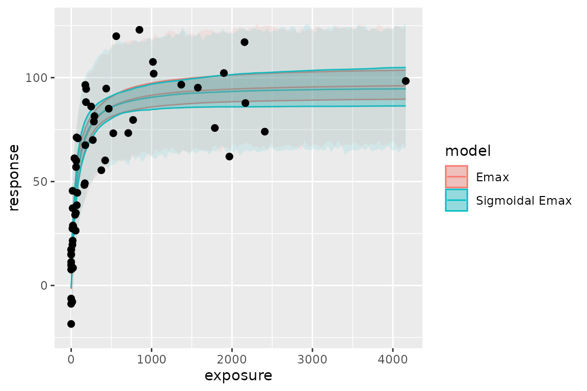

Simple Emax model fit with Stan
Kenta Yoshida
2023-02-16
Source:vignettes/emaxmodel.Rmd
emaxmodel.RmdThis vignette provide an overview of the workflow of Emax model analysis using this package.
Typical workflow
Model run with stan_emax function
stan_emax() is the main function of this package to perform Emax model analysis on the data. This function requires minimum two input arguments - formula and data. In the formula argument, you will specify which columns of data will be used as exposure and response data, in a format similar to stats::lm() function, e.g. response ~ exposure.
data(exposure.response.sample)
fit.emax <- stan_emax(response ~ exposure, data = exposure.response.sample,
# the next line is only to make the example go fast enough
chains = 2, iter = 1000, seed = 12345)
fit.emax
#> ---- Emax model fit with rstanemax ----
#>
#> mean se_mean sd 2.5% 25% 50% 75% 97.5% n_eff Rhat
#> emax 91.58 0.23 5.89 79.91 87.81 91.52 95.44 102.47 661.77 1
#> e0 6.00 0.19 4.61 -3.51 2.93 6.18 8.95 14.88 593.95 1
#> ec50 75.46 0.77 19.59 45.32 61.35 72.00 86.30 122.67 639.71 1
#> gamma 1.00 NaN 0.00 1.00 1.00 1.00 1.00 1.00 NaN NaN
#> sigma 16.67 0.08 1.69 13.89 15.50 16.49 17.52 20.89 510.02 1
#>
#> * Use `extract_stanfit()` function to extract raw stanfit object
#> * Use `extract_param()` function to extract posterior draws of key parameters
#> * Use `plot()` function to visualize model fit
#> * Use `posterior_predict()` or `posterior_predict_quantile()` function to get
#> raw predictions or make predictions on new data
#> * Use `extract_obs_mod_frame()` function to extract raw data
#> in a processed format (useful for plotting)plot() function shows the estimated Emax model curve with 95% credible intervals of parameters.
plot(fit.emax)
Output of plot() function (for stanemax object) is a ggplot object, so you can apply additional settings as you would do in ggplot2.
Here is an example of using log scale for x axis (note that exposure == 0 is hanging at the very left, making the curve a bit weird).
plot(fit.emax) + scale_x_log10() + expand_limits(x = 1)
#> Warning: Transformation introduced infinite values in continuous x-axis
#> Transformation introduced infinite values in continuous x-axis
#> Transformation introduced infinite values in continuous x-axis
Raw output from rstan is stored in the output variable, and you can access it with extract_stanfit() function.
class(extract_stanfit(fit.emax))
#> [1] "stanfit"
#> attr(,"package")
#> [1] "rstan"Prediction of response with new exposure data
posterior_predict() function allows users to predict the response using new exposure data. If newdata is not provided, the function returns the prediction on the exposures in original data. The default output is a matrix of posterior predictions, but you can also specify “dataframe” or “tibble” that contain posterior predictions in a long format. See help of rstanemax::posterior_predict() for the description of two predictions, respHat and response.
response.pred <- posterior_predict(fit.emax, newdata = c(0, 100, 1000), returnType = "tibble")
response.pred %>% select(mcmcid, exposure, respHat, response)
#> # A tibble: 3,000 × 4
#> mcmcid exposure respHat response
#> <int> <dbl> <dbl[1d]> <dbl>
#> 1 1 0 14.6 17.2
#> 2 1 100 61.1 93.5
#> 3 1 1000 98.4 90.0
#> 4 2 0 13.1 0.779
#> 5 2 100 55.1 52.0
#> 6 2 1000 88.6 82.0
#> 7 3 0 0.681 -15.6
#> 8 3 100 60.8 60.9
#> 9 3 1000 92.1 84.6
#> 10 4 0 0.217 36.1
#> # … with 2,990 more rowsYou can also get quantiles of predictions with posterior_predict_quantile() function.
resp.pred.quantile <- posterior_predict_quantile(fit.emax, newdata = seq(0, 5000, by = 100))
resp.pred.quantile
#> # A tibble: 51 × 11
#> exposure covemax covec50 cove0 Covariates ci_low ci_med ci_high pi_low pi_med
#> <dbl> <fct> <fct> <fct> <chr> <dbl> <dbl> <dbl> <dbl> <dbl>
#> 1 0 1 1 1 "" -1.54 6.18 13.5 -23.4 6.46
#> 2 100 1 1 1 "" 52.6 58.9 64.2 30.3 58.1
#> 3 200 1 1 1 "" 67.8 72.9 77.4 45.6 72.9
#> 4 300 1 1 1 "" 74.8 79.4 84.1 51.6 79.1
#> 5 400 1 1 1 "" 78.4 83.2 88.0 56.8 83.5
#> 6 500 1 1 1 "" 80.8 85.7 90.6 58.9 87.0
#> 7 600 1 1 1 "" 82.4 87.4 92.4 61.0 87.5
#> 8 700 1 1 1 "" 83.7 88.7 93.8 59.4 88.2
#> 9 800 1 1 1 "" 84.5 89.7 95.0 62.5 88.5
#> 10 900 1 1 1 "" 85.1 90.5 96.0 62.4 90.9
#> # … with 41 more rows, and 1 more variable: pi_high <dbl>Input data can be obtained in a same format with extract_obs_mod_frame() function.
obs.formatted <- extract_obs_mod_frame(fit.emax)These are particularly useful when you want to plot the estimated Emax curve.
ggplot(resp.pred.quantile, aes(exposure, ci_med)) +
geom_line() +
geom_ribbon(aes(ymin=ci_low, ymax=ci_high), alpha = .5) +
geom_ribbon(aes(ymin=pi_low, ymax=pi_high), alpha = .2) +
geom_point(data = obs.formatted,
aes(y = response)) +
labs(y = "response")Posterior draws of Emax model parameters can be extracted with extract_param() function.
posterior.fit.emax <- extract_param(fit.emax)
posterior.fit.emax
#> # A tibble: 1,000 × 6
#> mcmcid emax e0 ec50 gamma sigma
#> <int> <dbl> <dbl> <dbl> <dbl[1d]> <dbl[1d]>
#> 1 1 92.1 14.6 98.1 1 20.1
#> 2 2 82.8 13.1 97.2 1 14.8
#> 3 3 97.1 0.681 61.4 1 15.8
#> 4 4 94.8 0.217 53.4 1 16.4
#> 5 5 103. 4.48 114. 1 16.8
#> 6 6 85.1 9.96 61.5 1 13.8
#> 7 7 93.6 4.50 70.8 1 18.0
#> 8 8 93.9 6.54 81.7 1 16.3
#> 9 9 88.1 12.3 87.4 1 15.4
#> 10 10 89.6 9.45 95.2 1 14.7
#> # … with 990 more rowsFix parameter values in Emax model
You can fix parameter values in Emax model for Emax, E0 and/or gamma (Hill coefficient). See help of stan_emax() for the details. The default is to fix gamma at 1 and to estimate Emax and E0 from data.
Below is the example of estimating gamma from data.
data(exposure.response.sample)
fit.emax.sigmoidal <- stan_emax(response ~ exposure, data = exposure.response.sample,
gamma.fix = NULL,
# the next line is only to make the example go fast enough
chains = 2, iter = 1000, seed = 12345)
fit.emax.sigmoidal
#> ---- Emax model fit with rstanemax ----
#>
#> mean se_mean sd 2.5% 25% 50% 75% 97.5% n_eff Rhat
#> emax 89.79 0.58 10.16 72.22 83.58 88.82 95.17 112.35 303.50 1
#> e0 6.90 0.24 5.16 -2.58 3.24 6.82 10.12 18.70 467.41 1
#> ec50 78.29 1.74 30.82 45.43 61.49 72.01 87.37 148.57 312.42 1
#> gamma 1.17 0.02 0.35 0.65 0.93 1.12 1.35 1.99 398.55 1
#> sigma 16.74 0.07 1.78 13.83 15.42 16.63 17.92 20.60 739.06 1
#>
#> * Use `extract_stanfit()` function to extract raw stanfit object
#> * Use `extract_param()` function to extract posterior draws of key parameters
#> * Use `plot()` function to visualize model fit
#> * Use `posterior_predict()` or `posterior_predict_quantile()` function to get
#> raw predictions or make predictions on new data
#> * Use `extract_obs_mod_frame()` function to extract raw data
#> in a processed format (useful for plotting)You can compare the difference of posterior predictions between two models (in this case they are very close to each other):
exposure_pred <- seq(min(exposure.response.sample$exposure),
max(exposure.response.sample$exposure),
length.out = 100)
pred1 <-
posterior_predict_quantile(fit.emax, exposure_pred) %>%
mutate(model = "Emax")
pred2 <-
posterior_predict_quantile(fit.emax.sigmoidal, exposure_pred) %>%
mutate(model = "Sigmoidal Emax")
pred <- bind_rows(pred1, pred2)
ggplot(pred, aes(exposure, ci_med, color = model, fill = model)) +
geom_line() +
geom_ribbon(aes(ymin=ci_low, ymax=ci_high), alpha = .3) +
geom_ribbon(aes(ymin=pi_low, ymax=pi_high), alpha = .1, color = NA) +
geom_point(data=exposure.response.sample, aes(exposure, response),
color = "black", fill = NA, size=2) +
labs(y = "response")

Set covariates
You can specify categorical covariates for Emax, EC50, and E0. See help of stan_emax() for the details.
data(exposure.response.sample.with.cov)
test.data <-
mutate(exposure.response.sample.with.cov,
SEX = ifelse(cov2 == "B0", "MALE", "FEMALE"))
fit.cov <- stan_emax(formula = resp ~ conc, data = test.data,
param.cov = list(emax = "SEX"),
# the next line is only to make the example go fast enough
chains = 2, iter = 1000, seed = 12345)
fit.cov
#> ---- Emax model fit with rstanemax ----
#>
#> mean se_mean sd 2.5% 25% 50% 75% 97.5% n_eff Rhat
#> emax[FEMALE] 81.07 0.15 4.00 73.35 78.19 81.07 83.68 88.75 684.98 1.00
#> emax[MALE] 87.33 0.20 5.34 76.94 83.97 87.13 90.78 98.17 716.08 1.00
#> e0 15.36 0.11 2.35 10.44 13.73 15.42 16.94 19.77 498.08 1.00
#> ec50 108.09 0.85 22.14 70.16 92.95 106.86 120.37 158.03 671.68 1.00
#> gamma 1.00 NaN 0.00 1.00 1.00 1.00 1.00 1.00 NaN NaN
#> sigma 10.52 0.04 1.06 8.68 9.78 10.43 11.14 12.92 722.55 1.01
#>
#> * Use `extract_stanfit()` function to extract raw stanfit object
#> * Use `extract_param()` function to extract posterior draws of key parameters
#> * Use `plot()` function to visualize model fit
#> * Use `posterior_predict()` or `posterior_predict_quantile()` function to get
#> raw predictions or make predictions on new data
#> * Use `extract_obs_mod_frame()` function to extract raw data
#> in a processed format (useful for plotting)
plot(fit.cov)
You can extract MCMC samples from raw stanfit and evaluate differences between groups.
fit.cov.posterior <-
extract_param(fit.cov)
emax.posterior <-
fit.cov.posterior %>%
select(mcmcid, SEX, emax) %>%
tidyr::pivot_wider(names_from = SEX, values_from = emax) %>%
mutate(delta = FEMALE - MALE)
ggplot2::qplot(delta, data = emax.posterior, bins = 30) +
ggplot2::labs(x = "emax[FEMALE] - emax[MALE]")
#> Warning: `qplot()` was deprecated in ggplot2 3.4.0.
# Credible interval of delta
quantile(emax.posterior$delta, probs = c(0.025, 0.05, 0.5, 0.95, 0.975))
#> 2.5% 5% 50% 95% 97.5%
#> -15.852381 -14.230554 -6.308733 1.566904 3.164968
# Posterior probability of emax[FEMALE] < emax[MALE]
sum(emax.posterior$delta < 0) / nrow(emax.posterior)
#> [1] 0.897